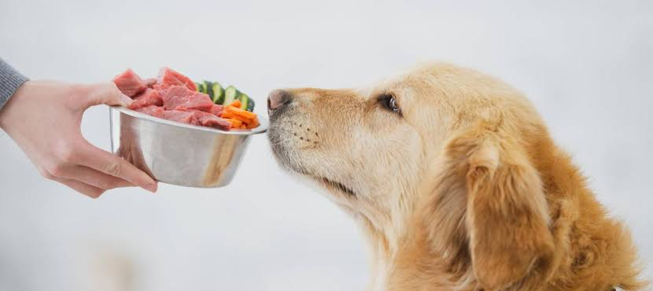

Cómo mejorar la alimentación de tu perro según su edad

La dieta ideal de un perro no es la misma durante toda su vida. Cambia con el crecimiento, el nivel de actividad física y el estado de salud. Conocer estas diferencias ayuda a prevenir problemas digestivos, mantener un peso saludable y alargar los años de buena calidad de vida.
Cachorros (hasta 12 meses)
Un cachorro crece rápido y necesita más energía y proteína por kilo que un adulto. Lo recomendable es un alimento formulado para cachorros, repartido en tres o cuatro raciones diarias. Las razas grandes requieren fórmulas específicas para que huesos y articulaciones se desarrollen a un ritmo adecuado.
Adultos (1 a 7 años)
En esta etapa el objetivo es mantener el peso. Dos raciones al día, medidas según la tabla del alimento y ajustadas a la actividad de tu perro, suelen ser suficientes. Los premios no deberían superar el 10% de las calorías diarias.
Seniors (desde los 7 años)
El metabolismo baja y aparecen molestias articulares. Un alimento senior, con menos calorías y con suplementos como omega 3 o condroitina, ayuda a mantenerlo activo. Es un buen momento para hacer un control veterinario cada seis meses.
Señales de que la dieta no está funcionando
- ✓ Aumento o pérdida de peso sin explicación.
- ✓ Pelaje opaco o caída excesiva de pelo.
- ✓ Deposiciones blandas o vómitos frecuentes.
- ✓ Baja de energía o desinterés por la comida.
Si notas alguna de estas señales, agenda una consulta general para revisar la dieta con uno de nuestros veterinarios.